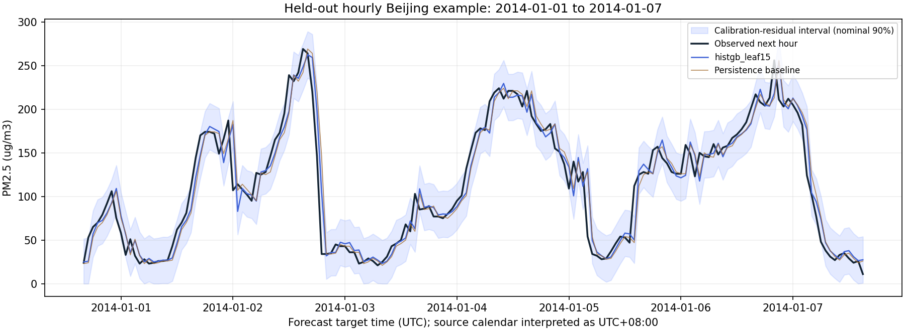

Models trained. Pipeline delivered.
Evacuation decisions remain unvalidated.
A real-time exposure-processing interface and two reproducible training workflows using public data, built around Rocket’s SPS30, ESP32, and GPS design. October 16, 2026.
evacuation_required = null means unknown.Physiological research model
Higher validation average precision than random forest. The target is early termination of a laboratory trial within the next five minutes.
Held-out detection and false alerts
Precision: 3.32%. The test set contains five participants and 17 trials. Most alerts do not correspond to the target event.
Supported by current hardware
Concentration, timing, coverage, trends, assistance requests, storage, and queries. These measurements do not directly establish health status.
From sensor readings to outputs
Records are processed separately by person, session, device, and source. Missing values are not replaced with zero. Duplicate or overlapping intervals are not counted twice, and gaps do not create invented exposure. The cumulative index is concentration multiplied by observed minutes; it is not an inhaled dose. Server queries check data freshness again when the status is requested.
| Status | Meaning | Health or evacuation interpretation |
|---|---|---|
monitoring | Current valid readings support continued observation. | Health has not been assessed. This is not permission to remain on duty. |
check_in | A general report has been received or human review is needed. | The on-scene lead determines the appropriate response. |
urgent_assistance | An explicit help request or report of a severe symptom requires immediate human attention. | The request remains latched. Later normal concentration readings do not automatically clear it. |
insufficient_data | Readings are missing, stale, conflicting, or of inadequate quality. | The result remains unknown; it is not downgraded to normal. |
Real training data and evaluation splits
| Item | PROSPIE physiological data | UCI Beijing PM2.5 |
|---|---|---|
| Original data | 40 participants, 155 trials, and 17,264 one-minute records. | 43,824 hourly records from 2010–2014. |
| Eligible samples | 9,079 windows from 22 participants and 96 trials; 105 positive windows. | 37,455 windows with complete histories and targets. |
| Inputs | Heart rate, measured rectal core temperature, and chest skin temperature. Six consecutive minute samples provide the current value, mean, and slope for each measurement. | 25 consecutive hours of PM2.5, using past readings, rolling statistics, and trends. |
| Target | Original experiment Event 2 or 3 within the next five minutes: thermal intolerance or a protocol-defined temperature stopping event. | PM2.5 concentration in the next hour, in µg/m³. |
| Split | Grouped by participant: 13 for training, four for validation, and five for testing. A participant never appears in more than one split. | Training: 2010–2012. Validation: first half of 2013. Prediction-interval calibration: second half of 2013. Test: 2014. |
| Missing data and leakage controls | Remove 9999 missing markers and author-interpolated values marked in red. Exclude terminal and later records. Exclude completed-trial windows with fewer than five minutes of remaining follow-up. Stopping information is used only for labels. | Discard windows with gaps or missing values. Use chronological splits and no filling from future observations. |
Held-out results determine the limits of use
| Measure | Test result | Interpretation |
|---|---|---|
| Physiological AP / ROC-AUC | 0.0304 / 0.6682 | Validation AP was 0.4798, followed by a substantial test decline. Positive windows make up 1.35% of the test set. |
| Physiological recall / precision | 65.0% / 3.32% | 13 positive windows detected and seven missed; 379 negative windows produced false alerts. |
| Physiological events and false alerts | Three of four early-stop trials had a warning before the event. There were 26 false-alert episodes over 24.32 negative observation hours. | Approximately 1.07 false-alert episodes per negative observation hour. The sample is small, with no external validation in firefighters. |
| PM2.5 MAE | Model: 12.0412 µg/m³. Persistence baseline: 12.0374 µg/m³. | The model did not outperform the simple baseline on the test set. No accuracy improvement is claimed. |
| PM2.5 empirical 90% prediction interval | Test coverage: 89.70%. | This does not guarantee coverage in a fireground environment or with a new sensor. |
The physiological threshold of 0.263120 was selected using the validation set only. Its scores are not calibrated probabilities. The 1,479 test windows are temporally correlated and must not be treated as 1,479 independent people. Of the original 39 early-stop trials, only 21 have eligible positive windows with complete histories. Reported performance is conditional on data availability and does not cover excluded participants or trials. The package includes the complete cleaning record, split definitions, candidate-model results, and individual predictions.
Research domains and current hardware
The physiological model runs only when the caller explicitly declares prospie_experiment and supplies complete, matching inputs. Rocket’s current PM2.5 sensor does not provide the three required physiological measurements, so the model is unavailable for that input. The hourly concentration model is restricted to uci_beijing_reference; ten-second fireground data are rejected. A domain argument is a caller declaration, not validation of real-world deployment.
Skin temperature cannot replace the measured core temperature used in the original study. Ordinary activity labels or psychological-stress labels are not relabeled as evacuation outcomes. This delivery provides traceable experiments and software interfaces; it is not a validated health-prediction product.
Quick start
python -m venv .venv .venv\Scripts\python -m pip install -r requirements.txt .venv\Scripts\python run_demo.py .venv\Scripts\python -m unittest discover -s tests -v .venv\Scripts\python server.py
The default local endpoint is 127.0.0.1:8766. POST /v1/readings accepts a sensor record. GET /v1/crew/<id>?session_id=<session> retrieves status. Historical examples use replay mode; sending them directly to the live interface marks them as stale.
Full run instructions · Input schema · Physiological training and evaluation details · Detailed PM2.5 report · Ground truth for the missed-event demo
Data the team needs to establish next
- Agree on event definitions and reasons with operational and medical leads. Record physiological concerns, tactical withdrawals, and device failures as separate outcomes.
- With appropriate participant consent, synchronize physiological measurements, environmental readings, workload, protective equipment, and device-quality information. Preserve real missing data, assistance requests, and event times.
- Reserve independent participants, workdays, and locations for validation. Evaluate event detection, missed events, false alerts per person-hour, data availability, and warning lead time.
- Set validation criteria in advance and complete external field validation before considering individualized decision support.
Example from the held-out PM2.5 test period

Full test statistics use 7,925 hourly windows. The chart shows only one segment.